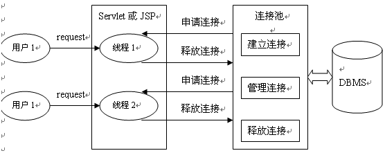

练习代码地址: https://github.com/lizhongzhen11/jdbcStudy-2
批量处理
当需要成批插入或者更新记录时。可以采用Java的批量更新机制，这一机制允许多条语句一次性提交给数据库批量处理。通常情况下比单独提交处理更有效率
JDBC的批量处理语句包括下面两个方法：
- addBatch(String)：添加需要批量处理的SQL语句或是参数；
- executeBatch()；执行批量处理语句；
通常我们会遇到两种批量执行SQL语句的情况：
- 多条SQL语句的批量处理；
- 一个SQL语句的批量传参；
1 2 3 4 5 6 7 8 9 10 11 12 13 14 15 16 17 18 19 20 21 22 23 24 25 26 27 28 29 30 31 32 33 34 35 36 37
| /* * 批量处理 */ @Test public void batch() { Connection connection = null; PreparedStatement preparedStatement = null; String sql = null; try { connection = tools.getConnection(); tools.cancelAutoCommit(connection); sql = "insert into jdbctransaction values(?,?,?)"; preparedStatement = connection.prepareStatement(sql); for(int i = 0; i < 1000; i++) { preparedStatement.setInt(1, i + 1); preparedStatement.setString(2, "name_" + i + 1); preparedStatement.setString(3, "money_" + i + 1); // 积攒sql preparedStatement.addBatch(); // 当积攒到一定程度,就统一的执行一次,并且清空先前"积攒"的sql if(i % 50 == 0) { preparedStatement.executeBatch(); preparedStatement.clearBatch(); } } // 若总条数不是批量数值的整数倍,则还需要再额外的执行一次 if(1000 % 50 != 0) { preparedStatement.executeBatch(); preparedStatement.clearBatch(); } connection.commit(); } catch (Exception e) { e.printStackTrace(); } finally { tools.release(null, preparedStatement, connection); } }
|
JDBC数据库连接池的必要性
在使用开发基于数据库的web程序时，传统的模式基本是按以下步骤：
1.在主程序（如servlet、beans）中建立数据库连接。
2.进行sql操作
3.断开数据库连接。
这种模式开发，存在的问题:
1.普通的JDBC数据库连接使用 DriverManager 来获取，每次向数据库建立连接的时候都要将 Connection 加载到内存中，再验证用户名和密码(得花费0.05s～1s的时间)。需要数据库连接的时候，就向数据库要求一个，执行完成后再断开连接。这样的方式将会消耗大量的资源和时间。数据库的连接资源并没有得到很好的重复利用.若同时有几百人甚至几千人在线，频繁的进行数据库连接操作将占用很多的系统资源，严重的甚至会造成服务器的崩溃。
2.对于每一次数据库连接，使用完后都得断开。否则，如果程序出现异常而未能关闭，将会导致数据库系统中的内存泄漏，最终将导致重启数据库。
3.这种开发不能控制被创建的连接对象数，系统资源会被毫无顾及的分配出去，如连接过多，也可能导致内存泄漏，服务器崩溃。
数据库连接池（connection pool）
为解决传统开发中的数据库连接问题，可以采用数据库连接池技术。
数据库连接池的基本思想就是为数据库连接建立一个“缓冲池”。预先在缓冲池中放入一定数量的连接，当需要建立数据库连接时，只需从“缓冲池”中取出一个，使用完毕之后再放回去。
数据库连接池负责分配、管理和释放数据库连接，它允许应用程序重复使用一个现有的数据库连接，而不是重新建立一个。
数据库连接池在初始化时将创建一定数量的数据库连接放到连接池中，这些数据库连接的数量是由最小数据库连接数来设定的。无论这些数据库连接是否被使用，连接池都将一直保证至少拥有这么多的连接数量。连接池的最大数据库连接数量限定了这个连接池能占有的最大连接数，当应用程序向连接池请求的连接数超过最大连接数量时，这些请求将被加入到等待队列中。

数据库连接池技术的优点
- 资源重用：
由于数据库连接得以重用，避免了频繁创建，释放连接引起的大量性能开销。在减少系统消耗的基础上，另一方面也增加了系统运行环境的平稳性。
- 更快的系统反应速度
数据库连接池在初始化过程中，往往已经创建了若干数据库连接置于连接池中备用。此时连接的初始化工作均已完成。对于业务请求处理而言，直接利用现有3可用连接，避免了数据库连接初始化和释放过程的时间开销，从而减少了系统的响应时间
- 新的资源分配手段
对于多应用共享同一数据库的系统而言，可在应用层通过数据库连接池的配置，实现某一应用最大可用数据库连接数的限制，避免某一应用独占所有的数据库资源
- 统一的连接管理，避免数据库连接泄露
在较为完善的数据库连接池实现中，可根据预先的占用超时设定，强制回收被占用连接，从而避免了常规数据库连接操作中可能出现的资源泄露
两种开源的数据库连接池
JDBC 的数据库连接池使用 javax.sql.DataSource 来表示，DataSource 只是一个接口，该接口通常由服务器(Weblogic, WebSphere, Tomcat)提供实现，也有一些开源组织提供实现：
DataSource 通常被称为数据源，它包含连接池和连接池管理两个部分，习惯上也经常把 DataSource 称为连接池
DBCP 数据源
DBCP 是 Apache 软件基金组织下的开源连接池实现，该连接池依赖该组织下的另一个开源系统：Common-pool. 如需使用该连接池实现，应在系统中增加如下两个 jar 文件：
- Commons-dbcp.jar：连接池的实现
- Commons-pool.jar：连接池实现的依赖库
Tomcat 的连接池正是采用该连接池来实现的。该数据库连接池既可以与应用服务器整合使用，也可由应用程序独立使用。
DBCP 数据源使用范例
数据源和数据库连接不同，数据源无需创建多个，它是产生数据库连接的工厂，因此整个应用只需要一个数据源即可。
当数据库访问结束后，程序还是像以前一样关闭数据库连接：conn.close(); 但上面的代码并没有关闭数据库的物理连接，它仅仅把数据库连接释放，归还给了数据库连接池。
初步使用dbcp连接数据库
1 2 3 4 5 6 7 8 9 10 11 12 13 14 15 16 17 18 19 20 21 22 23 24 25 26 27 28 29 30
| /* * 使用 DBCP 数据库连接池 * 1.加入 jar 包.依赖于commons-dbcp和commons-pool * 2.创建数据库连接池 * 3.设置了常用的属性 * 4.获取连接 */ @Test public void testDBCP() throws SQLException { BasicDataSource dataSource = null; // 1.创建 DBCP 数据源实例 dataSource = new BasicDataSource(); // 2.为数据源实例指定必须的属性 dataSource.setUsername("root"); dataSource.setPassword("123456"); dataSource.setUrl("jdbc:mysql://localhost:3306/springstudy?useUnicode=true&characterEncoding=utf-8&useSSL=false"); dataSource.setDriverClassName("com.mysql.jdbc.Driver"); // 3.指定数据源的一些可选的属性 // 1).指定数据库连接池中初始化连接的个数 dataSource.setInitialSize(10); // 2).指定最大连接数:同一时刻可以同时向数据库申请的连接数 dataSource.setMaxActive(10); // 3).指定最小连接数:在数据库连接池中保存的最少的空闲连接的数量 dataSource.setMinIdle(5); // 4).等待数据库连接池分配连接的最长时间,单位为毫秒,超过该时间将抛出异常 dataSource.setMaxWait(1000 * 5); // 4.从数据源获取数据库连接 Connection connection = dataSource.getConnection(); System.out.println(connection); }
|
引入外部配置文件的方式:
1 2 3 4 5 6 7 8 9 10 11 12 13 14 15 16
| /* * 1.加载配置文件.配置文件中的键需要来自 BasicDataSource 里面的属性,不能自己瞎写 * 2.调用 BasicDataSourceFactory 的 createDataSource() 方法创建 DataSource 实例 * 3.从 DataSource 实例中获取数据库连接 */ @Test public void testDBCPDataSourceFactory() throws Exception { Properties properties = new Properties(); InputStream stream = JDBCTest.class.getClassLoader().getResourceAsStream("dbcp.properties"); properties.load(stream); DataSource dataSource = BasicDataSourceFactory.createDataSource(properties); System.out.println(dataSource.getConnection()); BasicDataSource basicDataSource = (BasicDataSource) dataSource; System.out.println(basicDataSource.getMaxWait()); }
|
c3p0
初步使用c3p0连接方式:
1 2 3 4 5 6 7 8 9
| @Test public void testCp() throws Exception { ComboPooledDataSource cp = new ComboPooledDataSource(); cp.setUser("root"); cp.setPassword("123456"); cp.setJdbcUrl("jdbc:mysql://localhost:3306/springstudy?useUnicode=true&characterEncoding=utf-8&useSSL=false"); cp.setDriverClass("com.mysql.jdbc.Driver"); System.out.println(cp.getConnection()); }
|
引入外部配置文件:
1 2 3 4 5 6 7 8 9 10 11 12
| /* * 1. 创建 c3p0-config.xml 文件,参考帮助文档中 Appendix B: Configuation Files内容 * 2. 创建 ComboPooledDataSource 实例: * DataSource dataSource = new ComboPooledDataSource("c3p0"); * 3. 从 DataSource 实例中获取数据库连接 */ @Test public void testCpConfig() throws Exception { ComboPooledDataSource cp = new ComboPooledDataSource("c3p0"); System.out.println(cp.getConnection()); System.out.println(cp.getMaxStatements()); }
|
外部配置文件c3p0-config.xml:
1 2 3 4 5 6 7 8 9 10 11 12 13 14 15 16 17 18 19 20 21 22
| <c3p0-config> <named-config name="c3p0"> <!-- 指定连接数据源的基本属性 --> <property name="user">root</property> <property name="jdbcUrl">jdbc:mysql://localhost:3306/springstudy?useSSL=false</property> <property name="driverClass">com.mysql.jdbc.Driver</property> <property name="password">123456</property> <property name=""></property> <!-- 若数据库中连接数不足时,一次向数据库服务器申请多少个连接 --> <property name="acquireIncrement">5</property> <!-- 初始化数据库连接池时连接的数量 --> <property name="initialPoolSize">5</property> <!-- 数据库连接池中最小的数据库连接数 --> <property name="minPoolSize">5</property> <!-- 数据库连接池中最大的数据库连接数 --> <property name="maxPoolSize">10</property> <!-- C3P0数据库连接池可以维护的 Statement 个数 --> <property name="maxStatements">20</property> <!-- 每个连接同时可以使用的 Statement 对象的个数 --> <property name="maxStatementsPerConnection">5</property> </named-config> </c3p0-config>
|